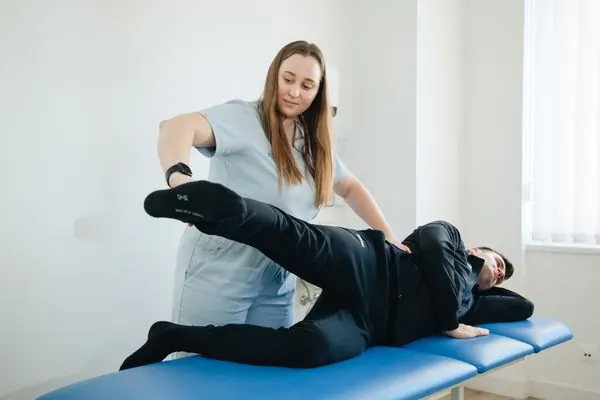
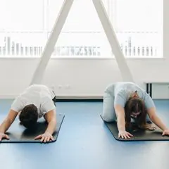
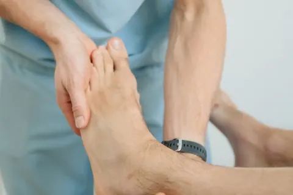
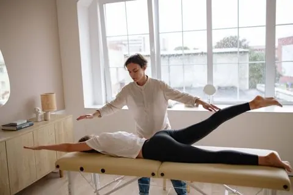

Chiropractic & Physical Therapy
Better Movement, Built Together
Cornerpost brings chiropractors and physical therapists into one clinic, so your assessment, hands-on treatment and exercise plan come from a team that works from the same notes.
until 7 pm
Two disciplines, one plan
Chiropractic and physical therapy share one record, so nothing gets lost between appointments.
Unhurried first visits
Sixty minutes for your history, a movement exam and a clear explanation of the plan.
Our services
Focused Care for Muscles & Joints
Care for the back, neck and joints, from everyday stiffness to rehab after an injury or an operation. Every plan starts with a proper assessment.
All services-
01
Spine & Back Care
Assessment and hands-on care for low-back and mid-back problems, from desk-related stiffness to lifting strains, paired with a simple home routine.
Learn more about Spine & Back Care -
02
Sports Injury Rehab
Structured rehab for sprains, strains and overuse problems, with strength and return-to-sport testing before you step back up.
Learn more about Sports Injury Rehab -
03
Post-Surgery Rehab
Physical therapy after knee, hip, shoulder or spinal surgery, coordinated with your surgeon's protocol and progressed week by week.
Learn more about Post-Surgery Rehab -
04
Joint & Mobility Care
Mobility work for stiff hips, knees and shoulders, including joint mobilization, guided exercise and practical advice for daily movement.
Learn more about Joint & Mobility Care
Why Cornerpost
One Clinic, Two Disciplines, One Plan for You


Most back, neck and joint problems need two things: skilled hands-on care and the right exercise. At Cornerpost the chiropractor and the physical therapist work side by side, review progress together and agree one plan with you.
- One shared record for every clinician
- A written plan after your first visit
- Exercises demonstrated in clinic, not just handed out
- Self-pay prices published on this website
Opening hours
Early and evening appointments for people who work standard hours.
- Mon – Thu
- 7 am – 7 pm
- Friday
- 7 am – 5 pm
- Saturday
- 8 am – 1 pm
- Sunday
- Closed
Clinicians who explain what they findChiropractors and physical therapists under one roof.
Sample figures — demo only- 12+Years in practice
- 6Licensed clinicians
- 18kVisits since opening
- 4.9/5Average review score
Our team
Meet the Care Team
Licensed chiropractors and physical therapists, supported by a front desk that handles insurance before you arrive.

Lead chiropractor
Chiropractor (DC)
Spine and neck assessment, joint manipulation and mobilization, and posture-focused home routines.

Rehab lead
Physical Therapist (DPT)
Post-surgery rehabilitation and strength progressions for knees, hips and shoulders.

Sports & running
Sports Rehab Specialist
Return-to-sport testing, running rehab and load management for active adults.
How it works
Four Simple Steps, First Call to Follow-up
Step 1: Book your visit
Choose a time online or call the front desk. We check your insurance before you arrive.
Step 2: Assessment
A 60-minute first visit: your history, a movement exam and a plain-language explanation.
Step 3: Hands-on care
Treatment from a chiropractor, a physical therapist or both, depending on your plan.

Step 4: Your home plan
A short exercise routine demonstrated in clinic, with a review at every follow-up.
Appointments
Ready When You Are, Book a First Visit
Tell us when suits you and which kind of visit you'd like. The front desk will call to confirm a time and check your insurance before you come in.
- Same-week first visits most weeks
- No referral needed for most plans

Request a first appointment
We reply within one working day to confirm a time.
Patient stories
What Patients Tell Us
A few words from people who have been through our door.
“I sit at a desk all day and my neck was a constant complaint. The chiropractor explained exactly what she found and gave me three exercises that fit into a lunch break.”
“After my knee surgery I wanted someone to tell me what normal progress looks like. Every session started with where I was and ended with what to do before the next one.”
“Booking was easy, the prices were on the website, and nobody tried to sell me a twenty-visit package on day one. The plan was clear and the exercises made sense.”
From the clinic
Notes on Movement & Recovery
Practical reading from our clinicians: what to expect, what to try and when to book.
Explore services Oct 28, 2026
Oct 28, 2026Treatment explained
Kinesiology tape: what it's for, and what it isn't
Why we sometimes use tape alongside exercise, and why it is never the whole plan.
Read more about kinesiology tape
Oct 14, 2026Sports rehab
Rolled an ankle? What an assessment looks at
Balance, strength and range of motion: the checks we use to plan a return to running.
Read more about ankle assessments
Sep 30, 2026Everyday mobility
Five desk-friendly movement breaks
Short routines for hips, back and shoulders you can do between meetings.
Read more about movement breaks